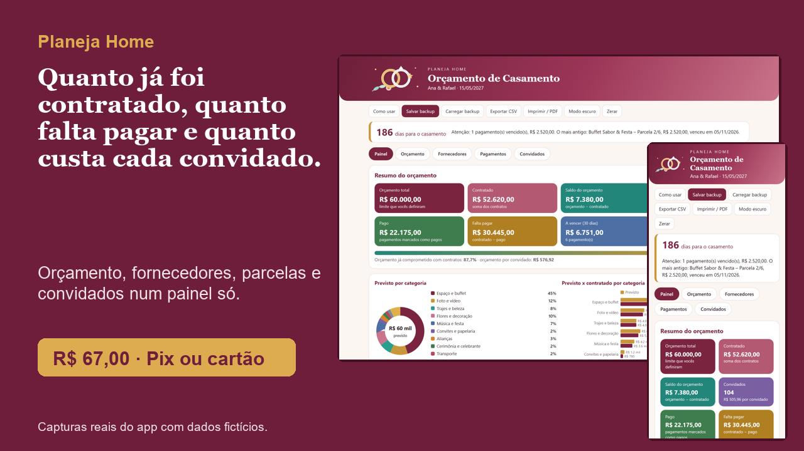
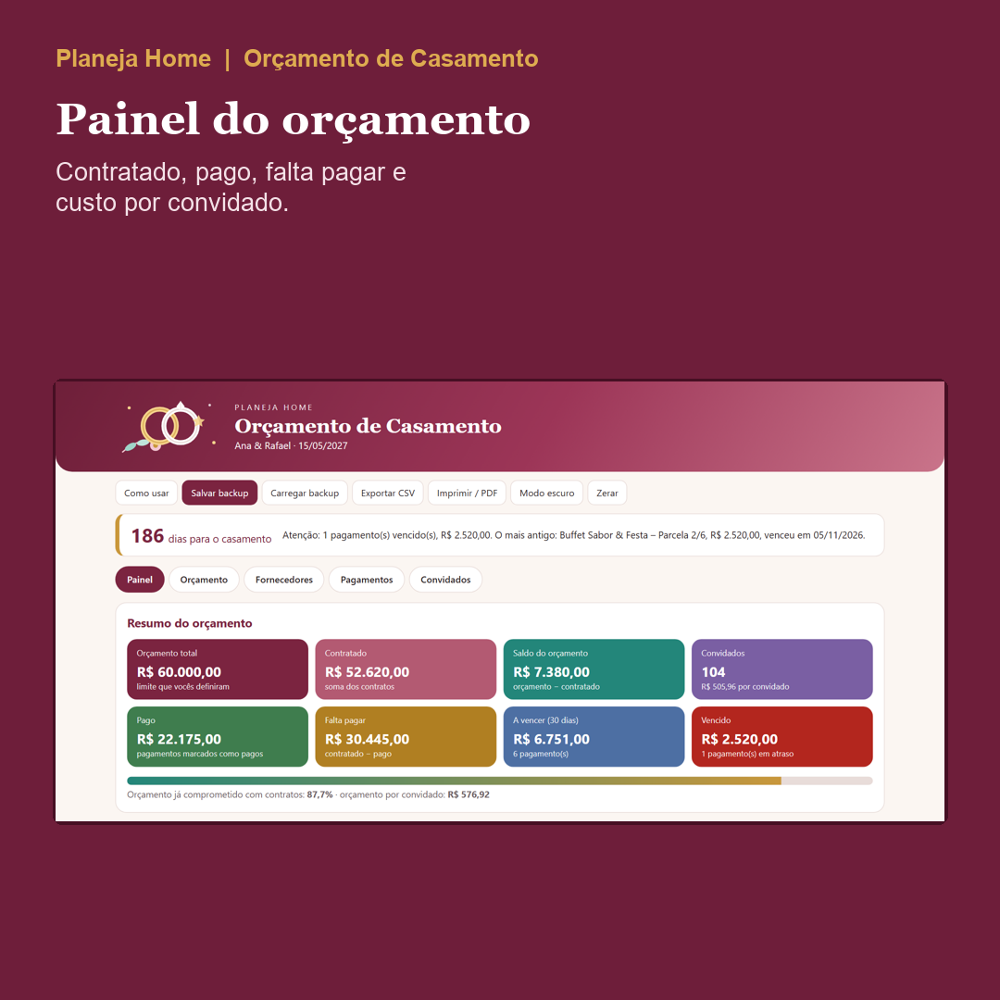
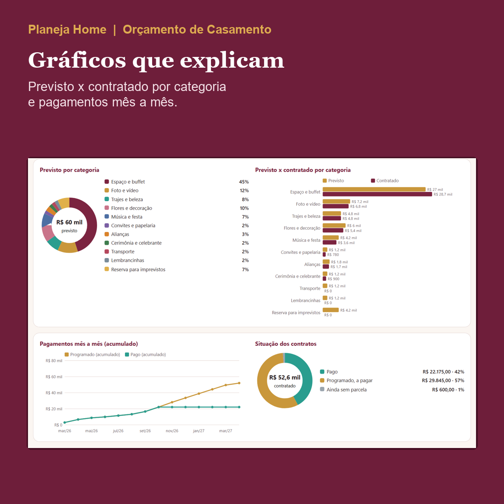
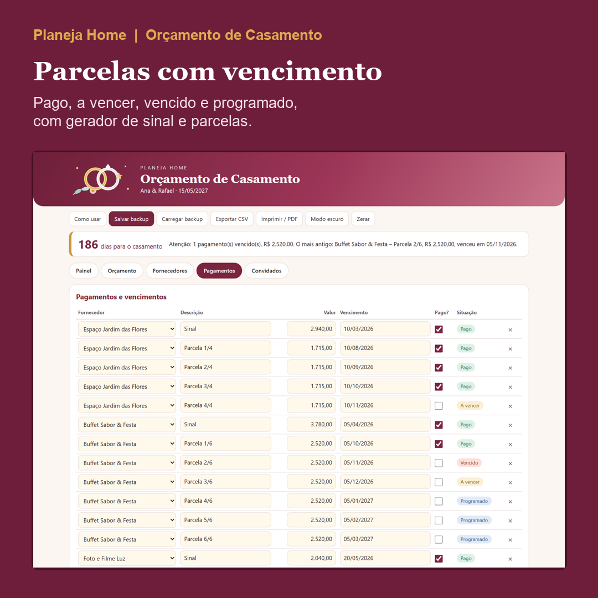
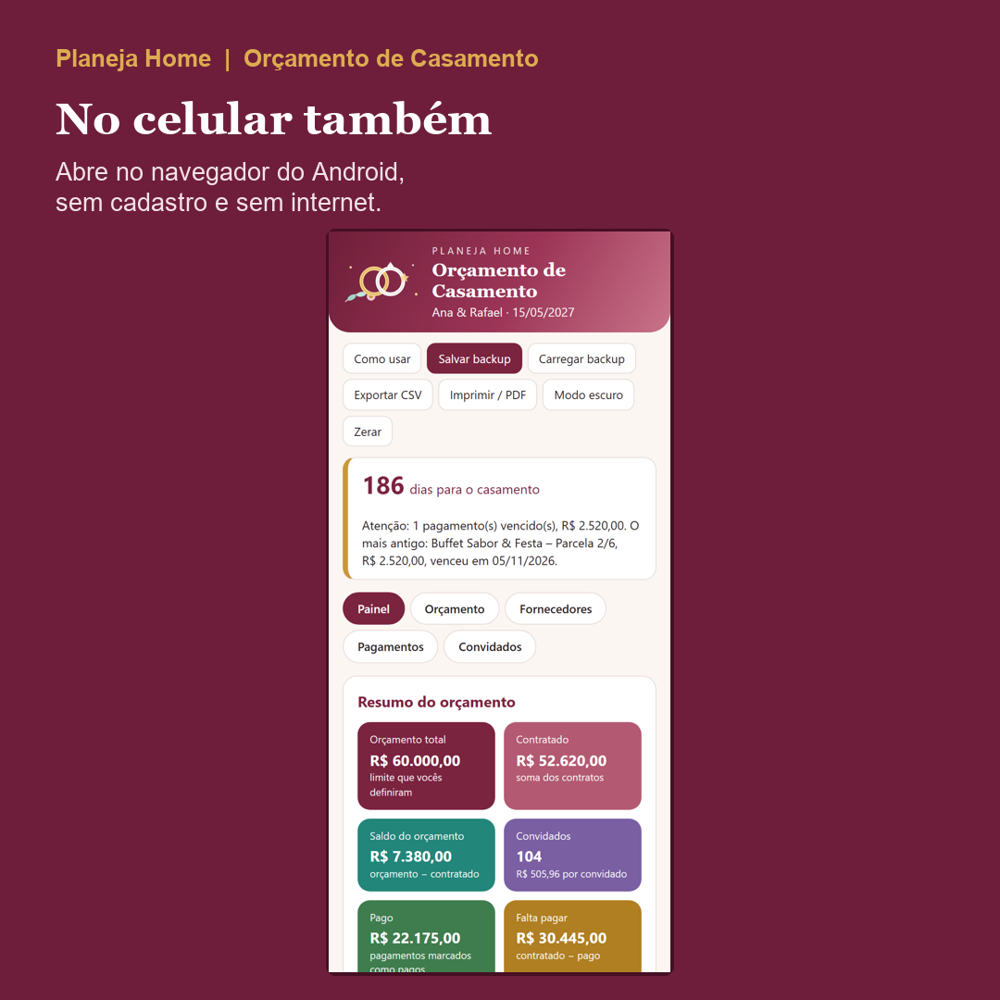

Planeja Home
Saiba quanto já está contratado, quanto falta pagar e quanto custa cada convidado do seu casamento.
O Orçamento de Casamento é um app que abre no navegador do computador ou do celular Android, em português, sem internet e sem cadastro. Você recebe o app em branco, um app de exemplo já preenchido e um guia em PDF ilustrado.
Quero o Orçamento de Casamento por R$ 67,00

O problema
Buffet, foto, flores, música: cada fornecedor tem um contrato, um entrada e parcelas em datas diferentes. Quando tudo fica em conversas e anotações soltas, é difícil saber se o orçamento ainda fecha e qual parcela vence primeiro.
O que é
Você digita o orçamento total e o número de convidados, lança os fornecedores e as parcelas, e o painel mostra o resto sozinho: previsto, contratado, pago, falta pagar, saldo e custo por convidado. Uma faixa no topo avisa quantos dias faltam e qual é o próximo passo, como um pagamento vencido.
O que vem
- App em branco, para o seu casamento, e app EXEMPLO já preenchido com um casal fictício, para ver tudo funcionando antes de começar.
- Guia em PDF ilustrado, com 18 páginas e prints numerados, tela por tela.
- Painel com 8 cartões, barra de uso do orçamento e 4 gráficos.
- Orçamento em 11 categorias editáveis (percentuais de referência que você ajusta).
- Fornecedores com contato, categoria e valor do contrato.
- Entrada e parcelas com vencimento, marcação de pago e avisos de vencido e a vencer; gerador de parcelas.
- Lista de convidados com lado, pessoas por convite e situação.
- Backup em arquivo, exportação para CSV, impressão ou PDF em A4 e modo escuro.




Capturas reais do app de exemplo, com dados fictícios.
Para quem é
Noivos que estão fechando fornecedores, quem tem parcelas espalhadas em vários meses e cerimonialistas iniciantes que querem um controle simples por cliente.
Para quem não é
- Quem quer consultoria ou promessa de economia: é uma ferramenta de controle, e o resultado depende das suas escolhas.
- Quem precisa de sincronização automática na nuvem: os dados ficam no navegador do seu aparelho.
Como acessar
Depois da compra, baixe o .zip e o guia em PDF pelo e-mail ou pela área de membros da Kiwify. Extraia o .zip e abra o app com dois cliques (Chrome ou Edge). Comece pelo EXEMPLO. Funciona no navegador do computador e do celular Android. No iPhone e no iPad, o arquivo abre só para consulta: para preencher, use um computador ou um Android e leve os dados pelo backup.
Quanto custa
R$ 67,00
Pagamento único. Pix em destaque; no cartão, o parcelamento tem os juros da operadora, pagos pelo comprador.
Garantia de 7 dias
Se não for o que você esperava ou o arquivo não abrir, peça o reembolso em até 7 dias pela Kiwify. Sem perguntas.
Perguntas frequentes
O que é, exatamente?
Um app que abre no navegador. Nele você distribui o orçamento por categoria, lança fornecedores e parcelas e vê o custo por convidado, com painel e gráficos.
O que vem no pacote?
Um .zip com o app em branco (para o seu casamento) e o app EXEMPLO já preenchido (dados fictícios, para ver tudo funcionando), mais o guia em PDF ilustrado, de 18 páginas.
Preciso de internet, de Excel ou de cadastro?
Não. Funciona offline, sem Excel, sem conta e sem instalação.
Funciona no celular?
Funciona no navegador do computador e do celular Android. No iPhone e no iPad, o arquivo abre só para consulta: para preencher, use um computador ou um Android e leve os dados pelo backup.
Meus dados ficam salvos?
Ficam no navegador do aparelho, de forma automática. Limpar os dados do navegador pode apagá-los, então use "Salvar backup" para ter cópia e "Carregar backup" para voltar.
Dá para usar em dois aparelhos, eu e meu noivo(a)?
Sim, passando o arquivo de backup de um para o outro. Não há sincronização automática.
As porcentagens por categoria são as certas?
São referências genéricas que você edita. Cada casamento é diferente, e o app não promete economia.
O que significa "gasto"?
O valor contratado com os fornecedores. O que já foi pago aparece separado, junto com o que falta pagar.
Como lanço o entrada e as parcelas?
Pelo gerador: escolha o fornecedor, informe entrada e número de parcelas, e ele cria os vencimentos mensais.
Posso exportar ou imprimir?
Sim: CSV (abre no Excel), backup em arquivo e impressão ou PDF em A4. Tem também modo escuro.
Como funciona a garantia?
7 dias a partir da compra. Peça o reembolso pela Kiwify ou responda o e-mail da compra; devolvemos sem perguntas.
Posso usar com meus clientes como cerimonialista?
Sim, um backup por cliente.